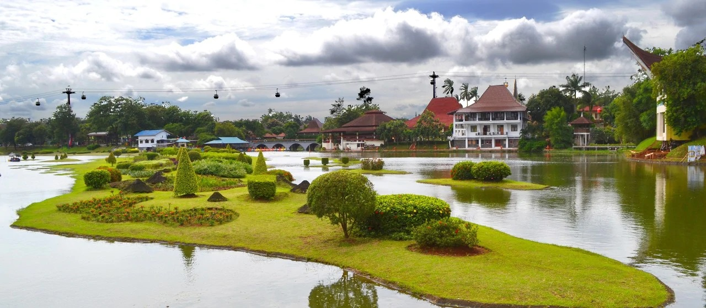

Sejarah
foto : indonesia.travel
Area yang terbilang paling tua di Jakarta adalah bagian utara pantai barat Jawa dimana sungai Ciliwung berada, mengailiri teluk-teluk di Jakarta. Kota pelabuhan ini pada mulanya bernama Sunda Kelapa, namun pada 22 Juni 1527 Pangeran Fatahillah menghancurkan Sunda Kelapa dan sebagai gantinya mendirikan kota Jayakarta di area tersebut. Tanggal inilah yang kemudian ditetapkan sebagai tanggal berdirinya kota Jakarta.
Kota Jayakarta berkembang sebagai kota pelabuhan yang sibuk, dimana para pedagang dari Cina, India, Arab dan Eropa serta dari Negara-negara lainnya saling bertukar barang-barang/komoditi. Tahun 1619, Pemerintahan Belanda (VOC) di bawah kepemimpinan Jan PieterszoonCoen menghancurkan Jayakarta dan dengan serta merta membangun kota baru yang terletak di bagian barat sungai Ciliwung, yang dia namakan Batavia, nama yang diambil dari Batavieren, nenek moyang bangsa Belanda.
Di masa-masa kejayaannya Batavia yang terkenal sebagai ‘Permata dari timur’, diduduki oleh VOC dan kemudain akhirnya diduduki pemerintah Belanda yang terbentang luas di kepulauan Hindia timur. Kemudian pada masa penjajahan Jepang di tahun 1942, nama Batavia diganti menjadi Jakarta.
Geografis
foto : indonesia.travel
Provinsi DKI Jakarta terbagi menjadi 5 wilayah Kota administrasi dan satu Kabupaten administratif, yakni: Kota administrasi Jakarta Pusat dengan luas 47,90 km2, Jakarta Utara dengan luas 142,20 km2, Jakarta Barat dengan luas 126,15 km2, Jakarta Selatan dengan luas 145,73 km2, dan Kota administrasi Jakarta Timur dengan luas 187,73 km2, serta Kabupaten Administratif Kepulauan Seribu dengan luas 11,81 km2. Di sebelah utara membentang pantai sepanjang 35 km, yang menjadi tempat bermuaranya 13 buah sungai dan 2 buah kanal. Di sebelah selatan dan timur berbatasan dengan Kota Depok, Kabupaten Bogor, Kota Bekasi dan Kabupaten Bekasi, sebelah barat dengan Kota Tangerang dan Kabupaten Tangerang, serta di sebelah utara dengan Laut Jawa.
Secara geologis, seluruh dataran terdiri dari endapan pleistocene yang terdapat pada ±50 m di bawah permukaan tanah. Bagian selatan terdiri atas lapisan alluvial, sedang dataran rendah pantai merentang ke bagian pedalaman sekitar 10 km. Di bawahnya terdapat lapisan endapan yang lebih tua yang tidak tampak pada permukaan tanah karena tertimbun seluruhnya oleh endapan alluvium. Di wilayah bagian utara baru terdapat pada kedalaman 10-25 m, makin ke selatan permukaan keras semakin dangkal 8-15 m. Pada bagian tertentu juga terdapat lapisan permukaan tanah yang keras dengan kedalaman 40 m.
Kebudayaan
 foto : bisniswisata.co.id
foto : bisniswisata.co.id
Budaya Jakarta merupakan budaya mestizo, atau sebuah campuran budaya dari beragam etnis. Sejak zaman Belanda, Jakarta merupakan ibu kota Indonesia yang menarik pendatang dari dalam dan luar Nusantara. Suku-suku yang mendiami Jakarta antara lain, Jawa, Sunda, Minang, Batak, dan Bugis. Selain dari penduduk Nusantara, budaya Jakarta juga banyak menyerap dari budaya luar, seperti budaya Arab, Tiongkok, India, dan Portugis.
Jakarta merupakan daerah tujuan urbanisasi berbagai ras di dunia dan berbagai suku bangsa di Indonesia, untuk itu diperlukan bahasa komunikasi yang biasa digunakan dalam perdagangan yaitu Bahasa Melayu. Penduduk asli yang berbahasa Sunda pun akhirnya menggunakan bahasa Melayu tersebut.
Walau demikian, masih banyak nama daerah dan nama sungai yang masih tetap dipertahankan dalam bahasa Sunda seperti kata Ancol, Pancoran, Cilandak, Ciliwung, Cideng, dan lain-lain yang masih sesuai dengan penamaan yang digambarkan dalam naskah kuno Bujangga Manik yang saat ini disimpan di perpustakaan Bodleian, Oxford, Inggris.
Meskipun bahasa formal yang digunakan di Jakarta adalah Bahasa Indonesia, bahasa informal atau bahasa percakapan sehari-hari adalah Bahasa Melayu dialek Betawi. Untuk penduduk asli di Kampung Jatinegara Kaum, mereka masih kukuh menggunakan bahasa leluhur mereka yaitu bahasa Sunda.
Makanan
 foto : indonesia.travel
foto : indonesia.travel
Jakarta merupakan kota internasional yang banyak menyajikan makanan khas dari seluruh dunia. Di wilayah-wilayah yang banyak didiami oleh para ekspatriat asing, seperti di daerah Menteng, Kemang, Pondok Indah, dan daerah pusat bisnis Jakarta, tidak sulit untuk menjumpai makanan-makanan khas asal Eropa, China, Jepang dan Korea. Makanan-makanan ini biasanya dijual dalam restoran-restoran mewah.
Di Jakarta, dan seperti kota-kota lainnya di Indonesia, Rumah Makan Padang merupakan restoran yang paling banyak dijumpai. Hampir di setiap sudut kota, dengan mudahnya dijumpai rumah makan yang manyajikan masakan asal Minangkabau ini. Selain Masakan Minang, Jakarta juga memiliki makanan khasnya. Yang paling terkenal adalah Kerak Telor, Soto Betawi, Kue Ape, Roti Buaya, Combro, dan Nasi Uduk. Sebagai tempat bermukimnya berbagai etnis di Indonesia, di sini juga bisa ditemukan berbagai macam makanan tradisional dari daerah lainnya, seperti Rawon, Rujak Cingur, dan Kupang Lontong. Di Jakarta juga terdapat Warung Tegal jumlahnya ada lebih dari 34.000 warung di Jabodetabek.
Wisata
Jakarta merupakan salah satu destinasi wisata yang cukup baik di Indonesia. Untuk meningkatkan jumlah wisatawan yang berkunjung ke Jakarta, pemerintah mengadakan program "Enjoy Jakarta". Beberapa tempat pariwisata yang terkenal dan biasa dikunjungi oleh para wisatawan lokal dan mancanegara di antaranya adalah Taman Mini Indonesia Indah, Taman Impian Jaya Ancol (termasuk taman bermain Dunia Fantasi dan Seaworld Indonesia). Disamping itu Jakarta juga memiliki banyak tempat wisata sejarah, yakni berupa museum dan tugu.
Taman Mini Indonesia Indah

foto : indonesia.travel
Taman Mini Indonesia Indah (TMII) merupakan suatu kawasan taman wisata bertema budaya Indonesia di Jakarta Timur. Area seluas kurang lebih 150 hektare atau 1,5 kilometer persegi ini terletak pada koordinat 6°18′6.8″LS,106°53′47.2″BT. Taman ini merupakan rangkuman kebudayaan bangsa Indonesia, yang mencakup berbagai aspek kehidupan sehari-hari masyarakat 26 provinsi Indonesia (pada tahun 1975) yang ditampilkan dalam anjungan daerah berarsitektur tradisional, serta menampilkan aneka busana, tarian, dan tradisi daerah.
Di samping itu, di tengah-tengah TMII terdapat sebuah danau yang menggambarkan miniatur kepulauan Indonesia di tengahnya, kereta gantung, berbagai museum, dan Teater IMAX Keong Mas dan Teater Tanah Airku), berbagai sarana rekreasi ini menjadikan TMIII sebagai salah satu kawasan wisata terkemuka di ibu kota.
Taman Impian Jaya Ancol
foto : indonesia.travel
Taman Impian Jaya Ancol merupakan sebuah objek wisata di bumi sari natar Jakarta Utara. Sebagai komunitas pembaharuan kehidupan masyarakat yang menjadi kebanggaan bangsa. Senantiasa menciptakan lingkungan sosial yang lebih baik melalui sajian hiburan berkualitas yang berunsur seni, budaya dan pengetahuan, dalam rangka mewujudkan komunitas 'Life Re-Creation' yang menjadi kebanggaan bangsa.
Setiap kawasan taman hiburan memiliki tema dan keseruan yang berbeda yang bakal memanjakan hari libur Anda. Misalnya seperti Dunia Fantasi atau yang kerap disebut Dufan, Seaworld, Atlantis Water Adventure, Ocean Dream Samudra, serta masih banyak lagi wahana seru lainnya yang mengagumkan.
Kota Tua
foto : indonesia.travel
Di sudut kota metropolitan Jakarta ada satu kawasan yang menyimpan nilai historis tinggi tetapi juga jadi tempat wisata hits, Kota Tua namanya. Banyaknya gedung-gedung tua bergaya kolonial yang masih kokoh berdiri memberikan nuansa seolah kembali ke masa lampau. Karenanya Tak heran jika hari libur atau akhir pekan tiba, kawasan ini selalu ramai dipadati pengunjung.
Saat mengunjungi tempat wisata di Jakarta yang satu ini, ada banyak hal yang bisa Anda jelajahi. Ada Museum Fatahilah yang jadi saksi sejarah perjuangan bangsa untuk meraih kemerdekaan. Lalu ada Gedung Merah, Museum Wayang, Museum Bank Indonesia, Museum Bahari, Pelabuhan Sunda Kelapa hingga Stasiun Kereta Api Kota.